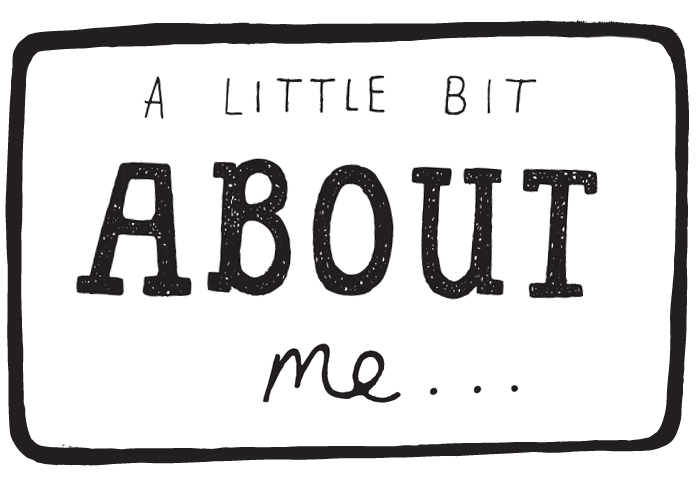

I am currently studying in Binus University in the computer science course.My programming skills aren't that advanced as I'm still learning. I enjoy playing mobile games, watching anime, reading mangas, etc. I also enjoy spending time with my family watching movies together.
